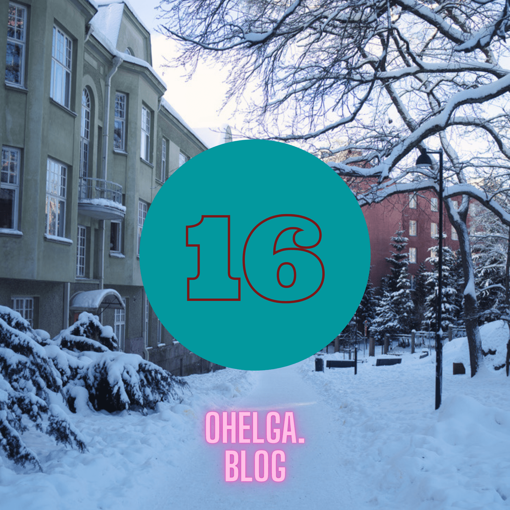

En syntetisk version, säger Tomi, en rymdversion! Päivän luuksuta et ehkä löydä astronauttia, eikä joulukuningasta, mutta kyllä tangokuninkaan!
Apple Music:
Spotify:

En syntetisk version, säger Tomi, en rymdversion! Päivän luuksuta et ehkä löydä astronauttia, eikä joulukuningasta, mutta kyllä tangokuninkaan!
Apple Music:
Spotify:

Kommentit / Kommentarer (1)
<p>Alltså han sjunger vackert och med energi, men tonen går han under, som ni uttrycker det. Det tar ner betyget. En sjua. Vet ni att jag såg hans 50-årskonsert på Olympiastadion 2015? Jag gick dit med ironisk attityd, och gick därifrån rätt såld och imponerad. Det var innan den tragiska nedförsbacken i offentligheten började.</p>